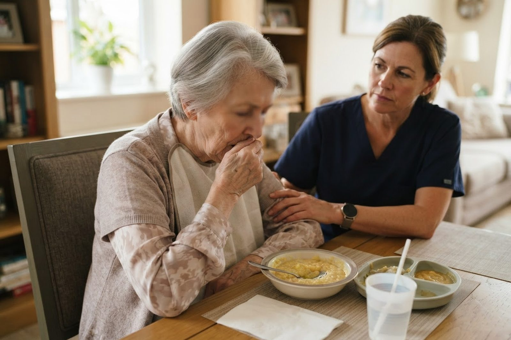

高齢の親が食事中によくむせます。肺炎が心配ですが、何かできることはありますか？
A. 回答食事や水分でむせることが増えてきた背景には、加齢や持病による飲み込む力（嚥下：えんげ機能）の低下があると考えられています。飲み込みのタイミングがずれると、食べ物や唾液が食道ではなく気管のほうへ入り込み（誤嚥：ごえん）、そこに口の中の細菌が一緒に運ばれることで誤嚥性肺炎が起こる場合があるとされています。ご心配のとおり、むせは「体からのサイン」のひとつです。一方で、口の中を清潔に保つ、食事のときの姿勢を整える、食べ物の形を工夫する、ワクチンで備えるなど、ご家庭で今日から取り組めることも多くあります。むせが増えてきた段階でご相談いただければ、肺炎を起こす前にできる対策をご一緒に考えられます。

食事中にむせやすくなる主な原因
飲み込む動作は、のどの筋肉と神経がごく短い時間で連携して行われています。この連携がわずかに乱れるだけでも、むせは起こりやすくなります。
- 加齢による嚥下機能の低下：のどの筋力や反射の速さが年齢とともに落ちていくと、飲み込みと呼吸の切り替えが遅れ、むせやすくなるとされています。とくにサラサラした水やお茶、汁物でむせるのは典型的なパターンです。
- 脳卒中やパーキンソン病などの神経の病気：飲み込みを指示する神経の働きが妨げられ、むせや飲み込みにくさが出ることがあります。以前に脳梗塞などをされた方では、ご本人が気づかないうちに誤嚥していることもあるとされています。
- 認知症や全身の衰え（フレイル）：食事に集中しにくい、口に入れたまま飲み込みを忘れる、体力が落ちて姿勢が保てないといったことから、誤嚥のリスクが上がる場合があります。
- お口の環境の悪化：歯や入れ歯の不具合でよく噛めない、口の中の細菌が増えている状態では、誤嚥したときに肺炎につながりやすくなると考えられています。
- 胃酸の逆流：横になったときに胃の内容物がのどまで戻り、それを誤嚥することがあります。夜間や明け方の咳、胸やけを伴うことがあります。
- お薬の影響：一部のお薬では、眠気や口の渇き、のどの反射の低下を通じて飲み込みにくさが出る場合があります。自己判断で中止せず、お薬手帳をご持参のうえご相談ください。
高齢の方の肺炎は「肺炎らしくない」ことがあります
肺炎というと「高熱が出て、激しく咳き込み、色のついた痰が出る」というイメージをお持ちの方が多いと思います。ところが高齢の方の誤嚥性肺炎では、こうした典型的な症状がそろわないことが少なくないとされています。日本呼吸器学会の解説でも、発熱・咳・膿性の痰といった症状がなく、なんとなく元気がない、食欲がない、のどがゴロゴロと鳴るといったはっきりしない症状だけがみられることが多い、とされています。
「熱がないから大丈夫」と判断せず、いつもと様子が違うという周囲の方の気づきを大切にしてください。
受診の目安
ご本人が症状を訴えないこともあるため、ご家族や介護に関わる方が普段との違いに気づくことが手がかりになります。
すぐに受診を検討してください
- 高熱や強い咳が出ていなくても、なんとなく元気がない・一日中ぼんやりしている・急に反応が乏しくなった
- 食欲が急に落ちた、いつもの食事量が半分以下になった、水分もとれない
- 呼吸が浅く速い（息が荒い）、肩で息をしている、話すのがつらそう
- 唇や指先が紫っぽい、ぐったりして立ち上がれない
- 食事中に激しくむせ込んで、そのあと息苦しさや呼吸の変化が続いている
- のどがゴロゴロと鳴り、痰がからんだ状態が抜けない
早めの受診をおすすめします
- ここ数か月でむせる回数が明らかに増えてきた
- 水やお茶など、サラサラしたもので特にむせる
- 食事に時間がかかるようになった、食後に声がかすれる・ガラガラ声になる
- 体重が少しずつ減ってきた、食事を残すようになった
- 微熱を繰り返す、たびたび痰がらみの咳が出る
- 過去に肺炎で入院したことがある、脳卒中やパーキンソン病などの持病がある
ご家庭でできる誤嚥性肺炎の予防
誤嚥そのものを完全になくすことは難しいものの、口の中の細菌を減らし、飲み込みやすい環境を整えることが予防として一般的にすすめられています。
今日から見直せる予防のポイント
- 口腔ケア：毎食後と就寝前に歯みがきを行い、入れ歯も外して洗う。歯みがきが難しい場合はスポンジブラシなどで口の中を拭き、唾液の中の細菌を減らす
- 歯科での定期的なチェック：入れ歯が合っているか、噛み合わせに問題がないかを確認してもらう
- 食事の姿勢：椅子に深く腰かけ、足の裏を床につけ、あごを軽く引いた姿勢で食べる。ベッド上では背もたれを起こす
- 食後すぐに横にならない：食後30分程度は上体を起こして過ごし、胃からの逆流を防ぐ
- ひと口の量とペース：ひと口を小さくし、飲み込んだのを確かめてから次を口に運ぶ。テレビを消して食事に集中できる環境にする
- 食べ物の形態の工夫：水やお茶でむせるときは、市販のとろみ剤でとろみをつける。パサつくものはあんかけにするなど、まとまりやすい形にする
- 肺炎球菌ワクチン・インフルエンザワクチン：肺炎の原因になりやすい病原体に備える。高齢者の肺炎球菌ワクチンは市町村の定期接種の対象となる年齢・条件が定められています
- 禁煙：喫煙は気道が異物を排出する働きを妨げるとされ、誤嚥性肺炎の予防の観点からも禁煙がすすめられています
- のどと体を動かす：会話や音読、うがい、無理のない範囲での散歩など、のどと全身の筋力を保つ習慣を続ける
当院での対応
いなだ医院は内科・呼吸器内科を標榜しており、「よくむせる」「熱はないが元気がない」といったご相談をお受けしています。診察では、いつからむせるようになったか、食事の様子、持病やお薬などをうかがったうえで、胸の音を聴き、必要と判断した場合には胸部レントゲン撮影や血液検査、酸素飽和度の測定などで肺炎の有無を確認していきます。ご予約なしで当日受診いただけます。レントゲン撮影自体は数分程度で終わりますが、混雑状況により待ち時間が生じますのでご了承ください。診察・検査はいずれも保険診療の対象となります。費用の詳細はお電話でお問い合わせください。
高齢者の肺炎球菌ワクチンについてもご相談いただけます。倉敷市の定期接種の対象となる方には市から案内が届きますので、通知や接種券をお持ちのうえご来院ください。
また当院は訪問診療・訪問看護を行っており、複合介護施設も運営しています。通院が難しくなった方については、ご自宅での療養を支える体制についてもご案内できます。むせや飲み込みの問題は、医療と介護の両面から支えることが大切だと考えています。入院や専門的な嚥下機能の評価が望ましいと判断した場合には、地域の医療機関へのご紹介も行っています。朝7時から診療しておりますので、ご家族が付き添いやすい時間帯もご利用いただけます。
受診時に伝えていただきたいこと
- いつごろから、どのくらいの頻度でむせるようになったか
- 何を食べたとき・飲んだときにむせやすいか（水分か、固形物か）
- 食事量や体重の変化、食事にかかる時間の変化
- 熱・咳・痰のほか、元気のなさ、眠りがちなど普段との違い
- これまでの持病（脳卒中、認知症、パーキンソン病、心臓や肺の病気など）と肺炎の既往
- 服用中のお薬（お薬手帳をお持ちください）、入れ歯の使用状況
- 介護保険の利用状況、ご自宅での介護の体制
「よくむせる」「熱はないけれど元気がない」——高齢のご家族のいつもと違う様子は、そのままにせずご相談ください。
📞 086-525-0600最終更新：2026年8月26日